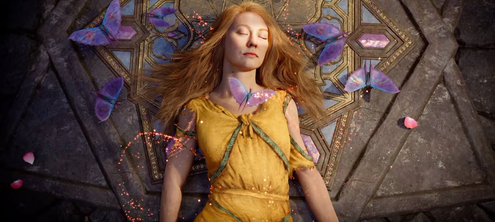
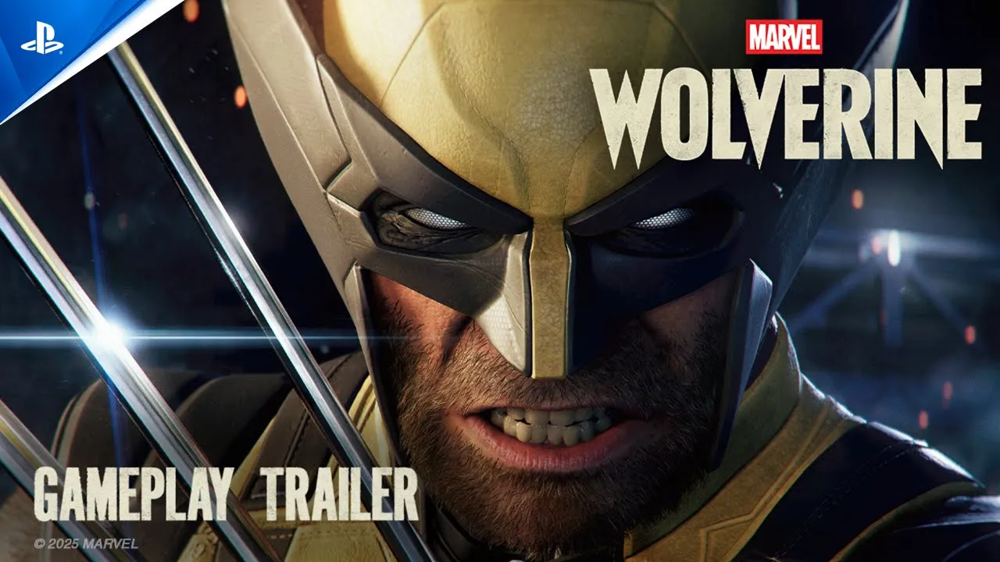
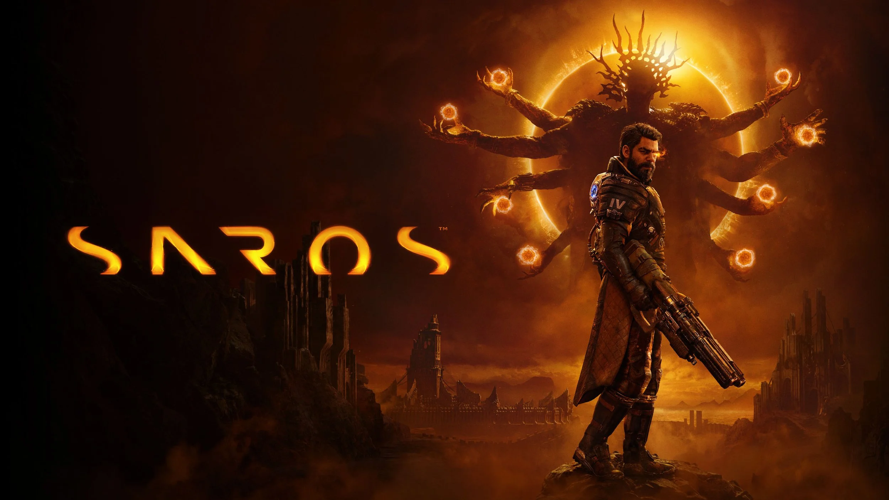
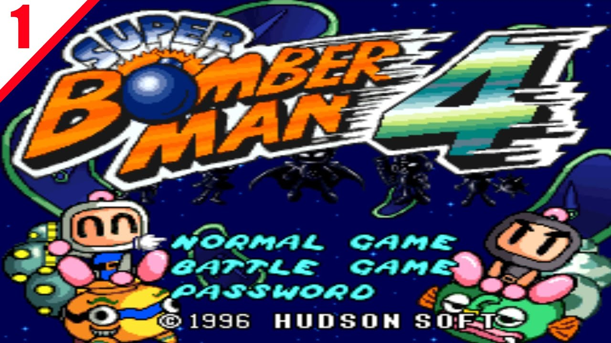
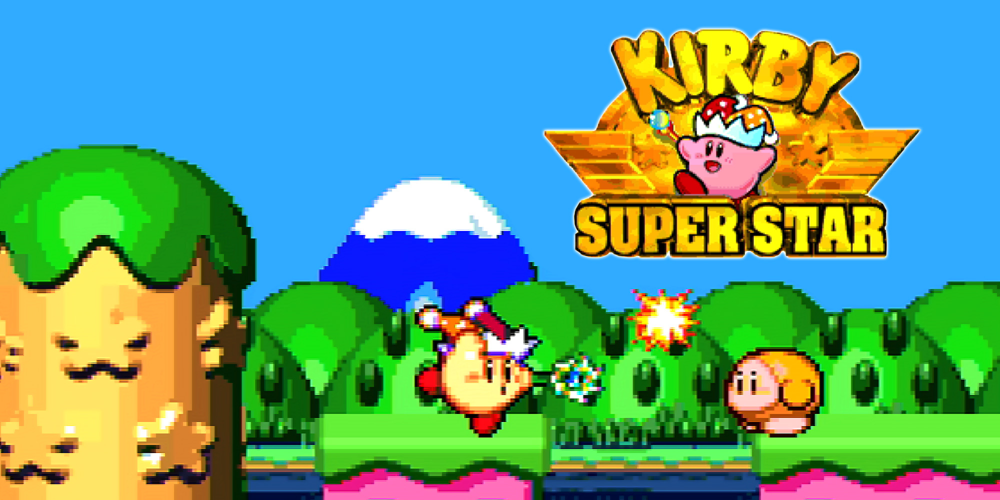
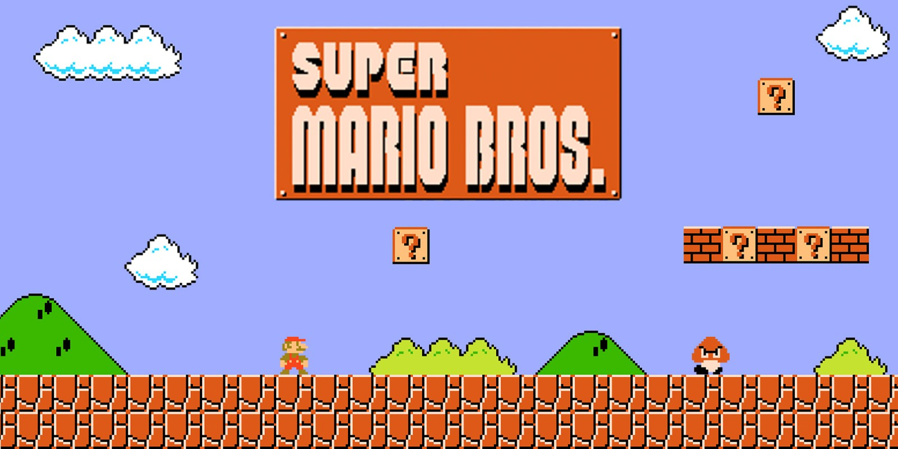
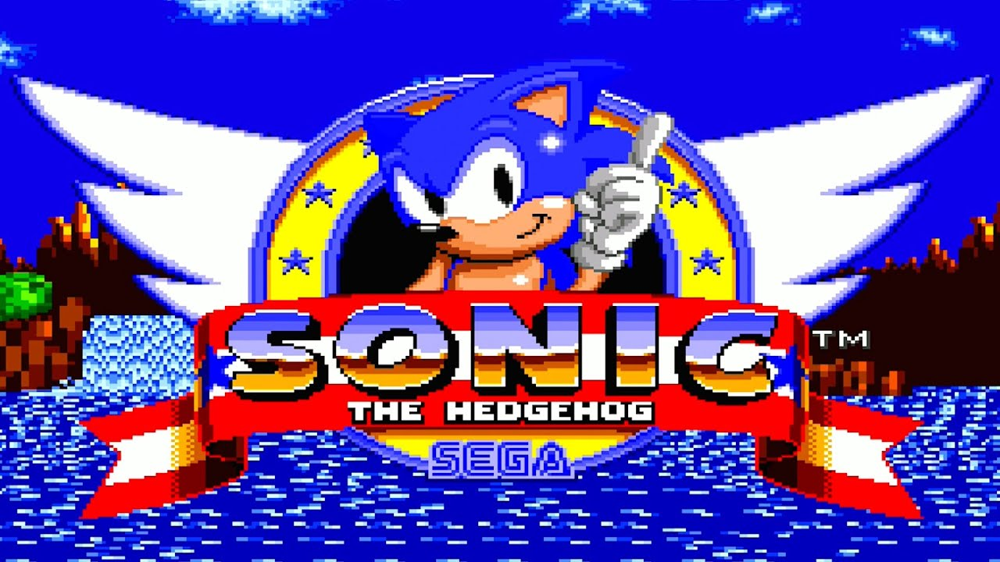

GTA VI é um jogo de ação e aventura desenvolvido pela Rockstar Games. Ele é o próximo título da série Grand Theft Auto e tem sido altamente aguardado pelos fãs. O jogo promete oferecer um mundo aberto ainda mais expansivo e detalhado, com gráficos impressionantes e uma narrativa envolvente. Os jogadores poderão explorar uma cidade fictícia inspirada em Miami, com uma variedade de missões, atividades e personagens para interagir. GTA VI promete ser uma experiência emocionante para os fãs da série e para os amantes de jogos de mundo aberto.
0 curtidas
Pragmata
Pragmata é um jogo de aventura e puzzle desenvolvido pela 开发商. O jogo se passa em um mundo fictício onde os jogadores devem resolver quebra-cabeças complexos para progredir na história. Pragmata oferece uma experiência envolvente com gráficos impressionantes e uma trama rica em detalhes.
0 curtidas
God of War Laufey

God of War: Laufey é o recém-anunciado jogo da franquia de ação e aventura desenvolvido pelo Santa Monica Studio para o PlayStation 5. Anunciado oficialmente no evento State of Play, o game traz como protagonista Laufey (também conhecida como Faye), a lendária guerreira Jötunn, segunda esposa de Kratos e mãe de Atreus.
0 curtidas
Marvel'Wolwerine

Marvel's Wolverine é um jogo de ação e aventura desenvolvido pela Insomniac Games e publicado pela Sony Interactive Entertainment. O jogo é baseado no personagem Wolverine da Marvel Comics e promete oferecer uma experiência imersiva e emocionante para os fãs do herói. Os jogadores poderão controlar Wolverine enquanto ele enfrenta inimigos, explora ambientes detalhados e desvenda uma história envolvente. Marvel's Wolverine é altamente aguardado pelos fãs de jogos de super-heróis e promete ser uma adição emocionante ao universo dos jogos da Marvel.
0 curtidas
Resident Evil Requiem
Resident Evil Requiem é um jogo de ação e horror desenvolvido pela Capcom. Ele é parte da popular série Resident Evil e promete oferecer uma experiência intensa e aterrorizante para os jogadores. O jogo se passa em um mundo pós-apocalíptico infestado por zumbis e outras criaturas perigosas, onde os jogadores devem lutar pela sobrevivência enquanto exploram ambientes sombrios e enfrentam desafios assustadores. Resident Evil Requiem é altamente aguardado pelos fãs da série e promete ser uma adição emocionante ao universo dos jogos de terror.
0 curtidas
Saros

Saros é um jogo de estratégia em tempo real desenvolvido pela empresa de jogos independente. O jogo se passa em um mundo futurista onde os jogadores assumem o papel de líderes de facções em guerra. Os jogadores devem construir suas bases, recrutar unidades e desenvolver estratégias para conquistar territórios e derrotar seus inimigos. Saros oferece uma experiência desafiadora e envolvente para os fãs de jogos de estratégia, com gráficos impressionantes e uma jogabilidade dinâmica.
0 curtidas
Jogos nostalgicos
GTA San Andreas
GTA San Andreas é um jogo de ação e aventura desenvolvido pela Rockstar Games. Ele é o décimo quarto título da série Grand Theft Auto e se passa em uma versão fictícia da Califórnia, com um mundo aberto vasto e detalhado. O jogo apresenta uma narrativa envolvente e uma jogabilidade dinâmica, permitindo que os jogadores explorem a cidade de Los Santos, Vice City e San Fierro.
0 curtidas
Bomberman 4

Bomberman 4 é um jogo de ação e quebra-cabeça desenvolvido pela Hudson Soft. O jogo se passa em um mundo onde os jogadores assumem o papel de Bomberman, um personagem famoso da série. Os jogadores devem explodir bombas para destruir inimigos e resolver quebra-cabeças para progredir na história. Bomberman 4 oferece uma experiência divertida e desafiadora para os fãs da série.
0 curtidas
Metal Slug
Metal Slug é uma série de jogos de ação em side-scrolling desenvolvida pela SNK. A série é conhecida por seu estilo único, com gráficos detalhados e uma jogabilidade desafiadora. Os jogos da série permitem que os jogadores controlem personagens com habilidades especiais e enfrentem ondas de inimigos em ambientes diversos.
0 curtidas
Kirby Super Star

Kirby Super Star é um jogo de ação e aventura desenvolvido pela HAL Laboratory. O jogo se passa em um mundo onde os jogadores assumem o papel de Kirby, um personagem famoso da série. Os jogadores devem explorar ambientes diversos e enfrentar inimigos para progredir na história. Kirby Super Star oferece uma experiência divertida e desafiadora para os fãs da série.
0 curtidas
Super Mario World

Super Mario World é um jogo de plataforma desenvolvido pela Nintendo. Ele é o quarto título da série Super Mario e se passa em um mundo fictício chamado Dinosaur Land. O jogo apresenta uma jogabilidade clássica de plataforma, onde os jogadores controlam Mario enquanto ele enfrenta inimigos e coleta power-ups para salvar a Princesa Peach. Super Mario World é considerado um dos melhores jogos de plataforma de todos os tempos e é altamente recomendado para os fãs da série.
0 curtidas
Sonic the Hedgehog

Sonic the Hedgehog é um jogo de plataforma desenvolvido pela Sega. O jogo se passa em um mundo onde os jogadores assumem o papel de Sonic, um personagem famoso da série. Os jogadores devem correr através de níveis rápidos e enfrentar inimigos para progredir na história. Sonic the Hedgehog oferece uma experiência divertida e desafiadora para os fãs da série.